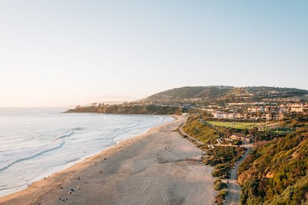
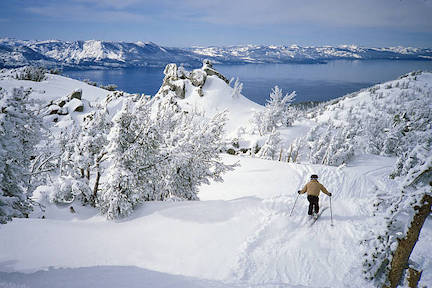

CALIFORNIA🌞
|  |
 |
 |
California has many fun places to travel to. Its diverse terrain provides anything from sunny beaches to snowy mountains.
Newport Beach 🌊
- Newport is located in Southern California, about 45 minutes away from Los Angeles and 30 minutes from Disneyland.
- It most known for "The Wedge" one of the best body surfing spots on the coast.
- A long path follows the coast line that is very popular for biking, skateboarding, and rollerskating.
Lake Tahoe 🗻
- Lake Tahoe is located on the California-Nevada boarder, in the Sierra Nevada mountain range.
- In the winter the numerous ski resorts are very popular for snow sports. Many people ski, snowboard, snowbike, and more.
- In the summer the 22 mile lake is a great spot for swimming, water skiing, wake boarding, and hanging out with friends.
San Francisco 🌉
- San Francisco is located on the coast and is one of the gems of Northern California. The SF penninsula is surrounded by both the pacific ocean and the bay.
- San Francisco is home to many landmarks such as, The Golden Gate Bridge, The Palace of Fine Arts, Curvy Lombard St. and many more.
- SF also has many sports teams you can watch. The 49ers football team, the Golden State Warriors for basketball, and the SF Giants baseball team.
HOME